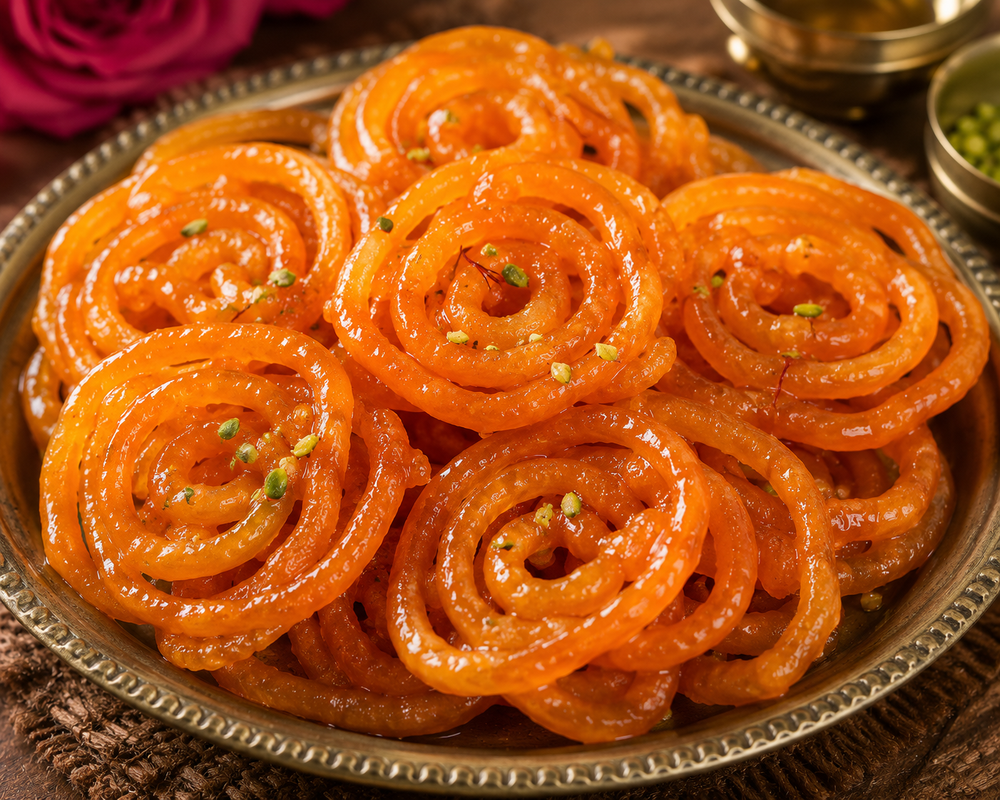

Jalebi
Jalebi is a crispy and juicy sweet made by frying a fermented flour batter in spiral shapes and then dipping it
in sugar syrup. It has a bright orange color, crunchy texture, and a sweet, tangy taste. Jalebi is often enjoyed
fresh and hot, especially as a breakfast treat or festive dessert.
Go Back